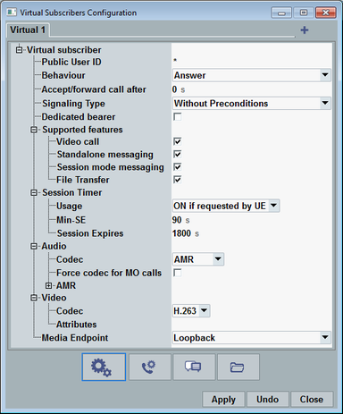
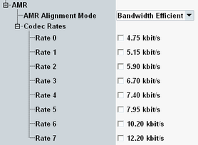
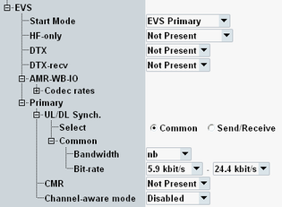
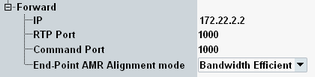
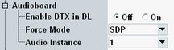
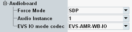
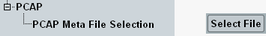

Press the "Virtual Subscriber" hotkey to open the "Virtual Subscribers Configuration" dialog box.
The dialog box provides several views. This section describes the view shown in the following figure. The highlighted button selects this view for display.

For incoming mobile-originating calls, the called virtual subscriber is selected via its public user ID.
By default, the first virtual subscriber profile has a wildcard "*" as ID. Any incoming calls, for which no profile with a matching public user ID is found, are routed to this virtual subscriber. If you want to use this mechanism, do not modify the ID.
For additional virtual subscribers, define a different public user ID for each profile.
Remote command:Defines how the virtual subscriber reacts to a call from the DUT.
"Answer" | The virtual subscriber answers the call after a configurable time. |
"No Answer" | The virtual subscriber ignores the incoming call. |
"Declined" | The virtual subscriber rejects the call. |
"Busy Here" | The virtual subscriber is busy. |
"Before Ringing (CFU, CFNRc, CFNL)" | The virtual subscriber forwards the call before ringing (active CF service). There is no third party. After the call forwarding procedure, the virtual subscriber answers the call. Option R&S CMW-KAA21 is required. |
"After Ringing (CFNR, CFB)" | The incoming call is forwarded after ringing for a configurable time (active CF service). There is no third party. After the call forwarding procedure, the virtual subscriber answers the call. So the virtual phone rings twice. Option R&S CMW-KAA21 is required. |
"Communication Deflection" | The virtual subscriber deflects the call (forwards it). There is no third party. After the deflection procedure, the virtual subscriber answers the call. Option R&S CMW-KAA21 is required. |
The setting applies to the behaviors "Answer" and "After Ringing (CFNR, CFB)".
The phone of the virtual subscriber rings for the configured time before the incoming call is accepted or forwarded.
Option R&S CMW-KAA21 is required.
Remote command:Specifies whether a voice call session is established with or without quality-of-service preconditions or whether early media is used. For a call with preconditions, a certain quality of service is ensured by reserving network resources before alerting the called user. SIP preconditions are defined in RFC 3312 and RFC 4032. See also 3GPP TS 24.229.
"Preconditions" | SIP signaling as for a call with preconditions |
"Without Preconditions" | SIP signaling as for a call without preconditions |
"Simple" | Simplified call flow, without preconditions and without 100rel |
"Require 100rel" | SIP signaling as for a call without preconditions The INVITE message contains a "Require" header field with the option tag "100rel". |
"Require Precondition" | SIP signaling as for a call with preconditions The INVITE message contains a "Require" header field with the option tag "precondition". |
"Without Preconditions, With 183" | SIP signaling as for a call without preconditions, with "183 Session in Progress" message |
"Early Media" | SIP signaling with early media, see 3GPP TS 24.182. The SIP headers are checked for the capabilities of the DUT. If the DUT supports preconditions, a call with preconditions is set up. Otherwise, a call without preconditions is set up. If the DUT supports the early-session model, this model is used. Otherwise, the gateway model is used. Option R&S CMW-KAA21 is required. |
Enables the automatic setup of a dedicated bearer, if a VoIMS connection is established. If the checkbox is disabled, the IMS server does not set up dedicated bearers for calls to/from this virtual subscriber.
For calls with precondition, you typically need a dedicated bearer.
Remote command:Configures the service capability information of the virtual subscriber for presence-based services. The presence information is sent to the DUT.
"Standalone Messaging" includes, for example, the RCS pager mode and the RCS large mode.
"Session Mode Messaging" includes, for example, RCS chats.
Remote command:Configures the session timer fields of SIP headers. The timers are defined in RFC 4028.
Option R&S CMW-KAA21 is required.
Selects in which cases the virtual subscriber supports session timers.
"OFF" | The virtual subscriber does not support session timers. If session timers are mandatory at the DUT, the session setup fails. |
"ON always" | Session timers are mandatory for the virtual subscriber. If the DUT does not support session timers, the session setup fails. |
"ON if requested by UE" | The virtual subscriber supports session timers. But they are not mandatory. A session is set up with or without timers, depending on whether the DUT supports them. |
Configures the "Min-SE" header field. The field defines the minimum acceptable timer value for the session expiration timer.
Remote command:Configures the "Session-Expires" header field.
Remote command:This node configures the audio codec. The codec is used for audio calls and for the audio stream of video calls.
Selects the voice codec type to be used.
To use the EVS codec with the audio board, option R&S CMW-KS104 is required.
"AMR" | Narrowband adaptive multi-rate (AMR) codec |
"AMR-WB" | Wideband adaptive multi-rate (AMR) codec |
"EVS" | Enhanced voice services (EVS) codec |
If the checkbox is enabled, the configured voice codec type is used for mobile-originating calls.
If the checkbox is disabled, the first codec offered via SDP is used.
Remote command:This node configures the wideband and narrowband AMR codec.

Selects the payload format.
"Octet Aligned" | All payload fields are aligned to octet boundaries. |
"Bandwidth Efficient" | Only the full payload is octet aligned. Fewer padding bits are needed. |
Selects the supported AMR codec rates. For the wideband AMR, there are nine codec rates (index 0 to 8). For the narrowband AMR, there are eight codec rates (index 0 to 7).
Remote command:This node configures the EVS codec.

Selects the start mode for the EVS codec. The mode can change during the session.
There is a primary mode and an interoperable (IO) mode, compatible with AMR-WB.
Remote command:Specifies the SDP parameter "hf-only". It indicates the allowed header format.
The SDP parameters are defined in 3GPP TS 26.445.
"Both" | The "Compact" format and the "Header-Full" format are allowed (value 0). |
"Header Full Only" | Only the "Header-Full" format is allowed (value 1). |
"Not Present" | The SDP parameter is omitted (no value, same effect as value 0). |
Specifies the SDP parameter "dtx". It enables or disables DTX for the send direction and the receive direction.
"Disable" | DTX is disabled (value 0). |
"Enable" | DTX is enabled (value 1). |
"Not Present" | The SDP parameter is omitted (no value, same effect as value 1). |
Specifies the SDP parameter "dtx-recv". It enables or disables DTX for the send direction of the receiver of the parameter.
"Disable" | DTX is disabled (value 0). |
"Enable" | DTX is enabled (value 1). |
"Not Present" | The SDP parameter is omitted (no value, same effect as value 1). |
Selects the codec rates supported for the AMR-WB IO mode.
Remote command:Selects a configuration mode for the bandwidth and bit-rate settings of the EVS primary mode.
"Common" | The same settings apply to the downlink (sending) and the uplink (receiving). A node "Common" is displayed for configuration of the settings. |
"Send/Receive" | There are separate settings for the downlink and the uplink. The nodes "Send (DL)" and "Receive (UL)" are displayed for configuration of the settings. |
- Narrowband only (NB)
- Wideband only (WB)
- Super wideband only (SWB)
- Fullband only (FB)
- Narrowband and wideband (NB-WB)
- Narrowband, wideband and super wideband (NB-SWB)
- Narrowband, wideband, super wideband and fullband (NB-FB)
Selects the supported bit-rate range for the EVS primary mode. The offered values depend on the selected bandwidth.
Remote command:Specifies the SDP parameter "cmr". It enables or disables codec mode requests.
"Disable" | Codec mode requests are disabled (value -1). |
"Enable" | Codec mode requests are enabled (value 0). |
"Present All" | A codec mode request must be present in each packet (value 1). |
"Not Present" | The SDP parameter is omitted (no value, same effect as value 0). |
Specifies the SDP parameter "ch-aw-recv".
The channel-aware mode uses partial redundant frames to improve the error resilience. The mode is only defined for a wideband or super-wideband codec with 13.2 kbit/s. For details, see 3GPP TS 26.448 and 3GPP TS 26.114.
"Disabled" | The channel-aware mode is disabled for the entire session (value -1). |
"Not Used" | The channel-aware mode is not used at the start of the session (value 0). |
"Not Present" | The SDP parameter is omitted (no value, same effect as value 0). |
"2, 3, 5, 7" | The channel-aware mode is enabled (value 2, 3, 5, 7). The number indicates the offset of the partial copy. |
Selects the video codec to be used for video calls to the DUT.
You can also specify codec attributes.
Remote command:Configures the routing of an audio signal or video signal received from the DUT. The setting applies to incoming and outgoing calls.
"Loopback" | The signal from the DUT is routed back immediately. A word spoken into the microphone of the DUT is returned to the loudspeaker of the DUT. |
"Forward" | The RTP and RTCP packets from the DUT are forwarded to an external media endpoint. The packets returned by the media endpoint are forwarded to the DUT. This method can be used to implement an alternative loopback mechanism. |
"Audioboard" | The signal from the DUT is routed to the speech decoder of the audio board. The signal returned by the speech encoder of the audio board is forwarded to the DUT. Select this value for voice over IMS audio measurements. The audio board is provided by R&S CMW-B400B, the speech codec by R&S CMW-B405A. To use the EVS codec with the audio board, option R&S CMW-KS104 is required. |
"PCAP" | The packets from the DUT are discarded. In the downlink direction, a PCAP file is played. |
Specifies settings for "Media Endpoint" = "Forward".

IPv4 or IPv6 address of the media endpoint
Remote command:The configured port is used for RTP packet forwarding.
The configured port plus one is used for RTCP packet forwarding.
Remote command:Port for the command interface between the DAU and the external media endpoint.
Remote command:Enter the AMR alignment mode used by the media endpoint.
You can use different modes towards the DUT and towards the media endpoint. See also "AMR Alignment Mode".
Remote command:Specifies settings for "Media Endpoint" = "Audioboard".


Enables voice activity detection and the generation of comfort noise parameters during silence periods. The parameters are sent to the DUT in silence indicator frames.
This setting is only relevant for AMR and AMR-WB codecs.
Remote command:Selects the codec rate or bit rate used by the speech codec of the audio board. The offered values depend on the setting "Codec".
Typically, audio tests are performed with a specific rate. Specify this rate here and ensure that it is enabled in the codec settings.
"SDP" | All rates are allowed. The rate requested by the DUT is used. If it sends several rates, the highest one is used. |
"xxx kbit/s" | The specified AMR codec rate is used. |
"Primary xxx kbps" | The specified EVS primary bit-rate is used. |
"AMR-WB IO xxx kbps" | The specified EVS AMR-WB IO codec rate is used. |
Selects the instance of the audio measurements firmware application to be used.
If your audio board is equipped with only one speech codec, use always instance 1.
Two speech codecs allow you to select the instance and implicitly the used codec hardware.
Remote command:Selects the speech packet type for the EVS AMR-WB IO mode. You can send AMR-WB encoded packets or EVS AMR-WB IO encoded packets to the DUT.
Remote command:Specifies settings for "Media Endpoint" = "PCAP".

Selects an XML file with metadata. The XML file specifies which PCAP file is played, depending on session characteristics, for example the payload type.
Create metadata XML files according to your needs and store them on the samba share of the DAU, in the subdirectory ims/pcap.
Remote command: